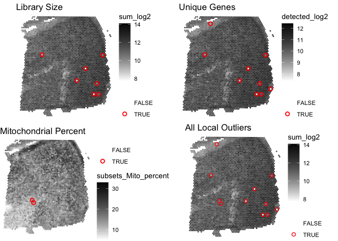

SpotSweeper is a package developed for spatially-aware quality control (QC) methods for the detection, visualization, and removal of both local outliers and large artifacts in spot-based spatial transcriptomics data, such as 10x Genomics Visium, using standard QC metrics.
Installation instructions
Currently, the only way to install SpotSweeper is by downloading the development version which can be installed from GitHub using the following:
if (!require("devtools")) install.packages("devtools")
remotes::install_github("MicTott/SpotSweeper")
}Once accepted in Bioconductor, SpotSweeper will be installable using:
if (!requireNamespace("BiocManager", quietly = TRUE)) {
install.packages("BiocManager")
}
BiocManager::install("SpotSweeper")Tutorial (in progress)
A detailed tutorial is available in the package vignette from Bioconductor. A direct link to the tutorial / package vignette is available here.
Input data format
In the examples below, we assume the input data are provided as a SpatialExperiment (SPE) object. The outputs for spot-level outliers and artifacts are stored in the colData of the SPE object.
Spot-level local outlier detection
This is an example workflow showing how to detect and visualize local outliers in 10X Genomics Visium data.
library(SpotSweeper)
# load Maynard et al DLPFC daatset
spe <- STexampleData::Visium_humanDLPFC()
#> see ?STexampleData and browseVignettes('STexampleData') for documentation
#> loading from cache
# change from gene id to gene names
rownames(spe) <- rowData(spe)$gene_name
# show column data before SpotSweeper
colnames(colData(spe))
#> [1] "barcode_id" "sample_id" "in_tissue" "array_row" "array_col"
#> [6] "ground_truth" "cell_count"
# drop out-of-tissue spots
spe <- spe[, spe$in_tissue == 1]
spe <- spe[, !is.na(spe$ground_truth)]SpotSweeper can be run on an SPE object with the following code. This outputs the local_outliers in the colData of the SPE object. Selecting data_output=TRUE exports z-transformed QC metrics as well.
# Identifying the mitochondrial transcripts in our SpatialExperiment.
is.mito <- rownames(spe)[grepl("^MT-", rownames(spe))]
# Calculating QC metrics for each spot using scuttle
spe<- scuttle::addPerCellQCMetrics(spe, subsets=list(Mito=is.mito))
colnames(colData(spe))
#> [1] "barcode_id" "sample_id" "in_tissue"
#> [4] "array_row" "array_col" "ground_truth"
#> [7] "cell_count" "sum" "detected"
#> [10] "subsets_Mito_sum" "subsets_Mito_detected" "subsets_Mito_percent"
#> [13] "total"
# Identifying local outliers using SpotSweeper
spe <- localOutliers(spe,
metric="sum",
direction="lower",
log=TRUE
)
spe <- localOutliers(spe,
metric="detected",
direction="lower",
log=TRUE
)
spe <- localOutliers(spe,
metric="subsets_Mito_percent",
direction="higher",
log=FALSE
)
# combine all outliers into "local_outliers" column
spe$local_outliers <- as.logical(spe$sum_outliers) |
as.logical(spe$detected_outliers) |
as.logical(spe$subsets_Mito_percent_outliers)We can now visualize local_outliers vs one of the QC metrics, sum_log2, with help from the escheR package.
library(escheR)
#> Loading required package: ggplot2
library(ggpubr)
# library size
p1 <- plotOutliers(spe, metric="sum_log2",
outliers="sum_outliers", point_size=1.1) +
ggtitle("Library Size")
# unique genes
p2 <- plotOutliers(spe, metric="detected_log2",
outliers="detected_outliers", point_size=1.1) +
ggtitle("Unique Genes")
# mitochondrial percent
p3 <- plotOutliers(spe, metric="subsets_Mito_percent",
outliers="subsets_Mito_percent_outliers", point_size=1.1) +
ggtitle("Mitochondrial Percent")
# all local outliers
p4 <- plotOutliers(spe, metric="sum_log2",
outliers="local_outliers", point_size=1.1, stroke=0.75) +
ggtitle("All Local Outliers")
# plot
plot_list <- list(p1, p2, p3, p4)
ggarrange(
plotlist = plot_list,
ncol = 2, nrow = 2,
common.legend = FALSE
)
Artifact detection
Large artifacts can be visualized and detected by calculating the local variance of standard QC metrics, such as mitochondrial ratio.
# load in DLPFC sample with hangnail artifact
data(DLPFC_artifact)
spe <- DLPFC_artifact
# inspect colData before artifact detection
colnames(colData(spe))
#> [1] "sample_id" "in_tissue" "array_row"
#> [4] "array_col" "key" "sum_umi"
#> [7] "sum_gene" "expr_chrM" "expr_chrM_ratio"
#> [10] "ManualAnnotation" "subject" "region"
#> [13] "sex" "age" "diagnosis"
#> [16] "sample_id_complete" "count" "sizeFactor"
# find artifacts using
spe <- findArtifacts(spe,
mito_percent="expr_chrM_ratio",
mito_sum="expr_chrM",
n_rings=5,
name="artifact"
)
# check that "artifact" is now in colData
colnames(colData(spe))
#> [1] "sample_id" "in_tissue" "array_row"
#> [4] "array_col" "key" "sum_umi"
#> [7] "sum_gene" "expr_chrM" "expr_chrM_ratio"
#> [10] "ManualAnnotation" "subject" "region"
#> [13] "sex" "age" "diagnosis"
#> [16] "sample_id_complete" "count" "sizeFactor"
#> [19] "expr_chrM_ratio_log2" "expr_chrM_log2" "coords"
#> [22] "k6" "k18" "k36"
#> [25] "k60" "k90" "Kmeans"
#> [28] "artifact"
# plotting using escheR
p1 <- make_escheR(spe) |>
add_fill(var = "expr_chrM_ratio", point_size=1.25)
p2 <- make_escheR(spe) |>
add_fill(var = "expr_chrM", point_size=1.25)
p3 <- make_escheR(spe) |>
add_fill(var = "k18", point_size=1.25)
p4 <- make_escheR(spe) |>
add_fill(var = "artifact", point_size=1.25) +
scale_fill_manual(
name = "",
values = c(
"TRUE" = "red",
"FALSE" = "grey")
)
#> Scale for fill is already present.
#> Adding another scale for fill, which will replace the existing scale.
plot_list <- list(p1, p2, p3, p4)
ggarrange(
plotlist = plot_list,
ncol = 2, nrow = 2,
common.legend = FALSE
)
Development tools
* Continuous code testing is possible thanks to [GitHub actions](https://www.tidyverse.org/blog/2020/04/usethis-1-6-0/) through `r BiocStyle::Biocpkg('biocthis')`.
* The [documentation website](http://MicTott.github.io/SpotSweeper) is automatically updated thanks to `r BiocStyle::CRANpkg('pkgdown')`.
* The code is styled automatically thanks to `r BiocStyle::CRANpkg('styler')`.
* The documentation is formatted thanks to `r BiocStyle::CRANpkg('devtools')` and `r BiocStyle::CRANpkg('roxygen2')`.
This package was developed using `r BiocStyle::Biocpkg('biocthis')`.